How Flip for Free works
What each feature does for you, and how it's built. Useful if you want to trust the numbers, change the code, or run it somewhere new.
The big picture
Flip for Free is one small program you run yourself: on your computer, in Docker, or on a free cloud server. It talks to eBay (and, if you connect them, CardTrader and Shopify) with your own keys, and keeps everything in one database file that you choose the location of.
How it's built

- Web app: Flask with server-rendered pages (Jinja templates, one stylesheet, a little plain JavaScript). No build step, so the code you download is the code that runs.
- Data: SQLite in the folder you pick on the setup screen, so it can live in Dropbox or OneDrive. Writes go
through one lock (
db.write_lock) and commit quickly, so long jobs never block the pages. - Background work: a sync thread (every few hours, or Sync now) and an automations thread (every 30 minutes) run inside the same process.
- Explore the code: the code map is an interactive graph of every module, class and function, built with graphify from the source.
Code: app.py, db.py, common.py
True profit on every sale
For each sale you see what the buyer paid, every penny eBay took (fees, promoted listings, postage labels, refunds, regulatory fees) and what's left after your own costs: the true profit.
How it's built
- Orders come from eBay's Fulfillment API: what the buyer paid for items and postage.
- Money movements come from eBay's Finances API: every charge and credit eBay made, each tagged with its order. eBay requires these calls to be signed, so Flip creates a signing key for your account the first time.
profit.compute_salesnets them per order: net from eBay = the sum of every money movement for that order, and eBay deductions = what the buyer paid minus that net, broken down by type. Anything eBay doesn't label is shown as "Other eBay adjustments" so the totals always add up.- If eBay's money data hasn't arrived yet (it lags a day or two), the fee is estimated and marked est. until the real figure replaces it.
- Your own costs come next: postage you paid elsewhere, packaging and handling (defaults from Settings, or set per item or sale), and the item's cost. Money made = net from eBay − your costs; profit = money made − item cost.
Account-level charges that aren't tied to an order (shop subscription, ad fees not linked to a sale) are kept separate and, if you choose, taken off the dashboard's true profit.
Code: profit.py, sync.py, ebay_api.py
Syncing with eBay
Press Sync now or let it run on its schedule: orders, fees, your active listings and dispatch dates come in without you exporting anything.
How it's built
- First sync looks back up to two years (eBay's limit); later syncs only fetch what changed, using each order's last-modified time.
- Listings come from the Trading API (
GetMyeBaySelling), including watchers and quantities. Relisted items are followed back to the original listing so time to sell counts from the first day. - Saving as it goes: each order is committed as soon as it's processed, and listings are downloaded before the database is locked, so other pages stay responsive during a long first sync.
- Tokens: you sign in with eBay's own page (OAuth). The refresh token is kept in your database and access tokens are renewed automatically.
Code: sync.py, ebay_api.py
Inventory, bulk buys and the item timeline
Log what you buy (one item or a whole lot), where it's stored and what it cost. Each item keeps a timeline: bought, listed, relisted, price changes, sold.
How it's built
- Items link to eBay listings automatically by SKU, or by hand from the item page. Sales then pick up the item's cost, storage location and bulk buy.
- Bulk buys spread the lot's total cost (plus extras like fuel) over its items: evenly, or in proportion to their prices. An item with a fixed cost (the one valuable card in a binder) keeps it, and the rest is split over the others. The bulk buy page shows money made back, profit and return on investment.
- Every change is written to
item_events, which is what the timeline shows.
Code: features.py, profit.py, db.py
Time to sell
How long things take to sell: an average and median for single items, and "one sells every N days" for multi-quantity listings, with a sell-out estimate for the stock left.
How it's built
timetosell.chains groups listings across relists (by relisted_from, or the
inventory item), so the clock starts at the first listing. Single-quantity items use first listed → sold.
Multi-quantity listings use days listed ÷ units sold over the period, and project the stock left at that rate.
Cancelled and refunded sales don't count.
Code: timetosell.py
Automations: relist and promote
Optional rules that change your live eBay listings: end and relist stale listings (optionally dropping the price each time), and add promoted-listing ads only after something has gone unsold for a while.
How it's built
- Runs every 30 minutes while the app is open, and only on one device at a time (the device name is recorded).
- End & relist uses
EndFixedPriceItem/RelistFixedPriceItemjust before eBay's 30-day auto-renew, with a per-relist price cut, a floor, "never below what I paid" and a daily cap. You can ask for relists to wait for your approval instead. - Delayed promotion adds cost-per-sale ads through the Marketing API once an item has been listed N days.
- Everything is paused until you press Resume; every action is logged and added to the item's timeline.
Code: automation.py, ebay_api.py
Other shops: Vinted, CardTrader and Shopify
Sell the same stock in more places without selling anything twice.
How it's built
Vinted (and Depop, Facebook)
These don't allow outside tools to post for normal sellers, so Copy to Vinted prepares everything for you to paste in: the title, the eBay description with formatting removed plus item specifics, the closest Vinted condition, a price that keeps your eBay take-home, and the photos as a zip. Mark the item as listed on Vinted and an eBay sale raises a reminder to take it down there.
CardTrader
Connect with your CardTrader API token. On a card, Flip reads the set code in the title (LOB-124, SDY-006) to find
the expansion in CardTrader's catalogue and ranks its cards by name similarity. It then shows the cheapest current
listings for that card and CardTrader's own fields (condition, language, first edition) for the card type. Orders come
back as sales; prices in euros are converted with the European Central Bank's daily rate (fx.py).
Shopify
Connect an app from Shopify's Dev Dashboard. Flip uses the client credentials grant for a 24-hour token and renews
it automatically. List on Shopify builds a product from the eBay listing with productSet and publishes
it to the Online Store; Shopify orders come in as sales with your payment-fee settings applied.
Stock in step
When anything sells, on eBay, CardTrader, Shopify or a sale you record, its quantity comes off the item's listings
on the other shops: EndFixedPriceItem or ReviseInventoryStatus on eBay (read back and
checked), increment on CardTrader, and a compare-and-set inventoryAdjustQuantities on Shopify.
stock_sync_done makes sure each sale is applied once, and only to listings that existed when it sold.
Code: crosslist.py, stores.py, cardtrader_api.py, shopify_api.py, fx.py
UK tax, expenses and mileage
Self Assessment figures for the self-employment short pages (SA103S), on a cash or accrual basis, with checks for missing data before you file.
How it's built
taxcalcmaps sales, eBay fees, expenses and mileage to the SA103S boxes for the tax year that starts on 6 April.- Mileage uses HMRC's approved rates per vehicle; post office trips can be logged automatically from your dispatch days and saved drop-off points.
- Mark a year as filed and any change that would alter it asks you to confirm first, in the app and the API.
Code: taxcalc.py, dispatch.py, features.py
API and Claude connector
Everything in the app is also available as a JSON API, so Claude, a spreadsheet or a script can do the typing for you.
How it's built
- Keys are random
flip_…strings shown once; only a SHA-256 hash is stored. mcp_server.pyis a Model Context Protocol server: each Claude tool is a thin call to the API, so both always behave the same.- Full reference with real examples: API documentation.
Code: api.py, mcp_server.py
Who can get in
By default only the computer running it can open Flip for Free. Other devices and servers are opt-in.
How it's built
- On your computer: requests are only accepted from the same machine.
- On your Wi-Fi: with
--lan, other devices can connect once they've been paired with a code from Settings → Use on your phone, and they still sign in with eBay. - On a server: with
--public-urlit only listens on the server itself, behind Tailscale (or Cloudflare), which decides who can reach it; you sign in with eBay. - Docker: traffic from Docker's own network counts as "this computer", because that's where your browser's requests come from.
Code: app.py
Errors, backups and updates
When something goes wrong you get a plain explanation and a one-click way to report it; your data is backed up before every update.
How it's built
- Errors:
errors.pykeeps a rotating log and shows a friendly page with "Report this on GitHub". Emails, tokens, keys, postcodes and your computer's user name are scrubbed from reports before you see them. - Updates: Settings → Updates pulls the latest version from GitHub (git, or the zip if it isn't a git copy), backs up the database first, then restarts itself with exit code 3, which the launch scripts, Docker and systemd all treat as "start again".
- Backups: on a server a nightly job keeps 30 days of database copies.
Code: errors.py, updater.py, deploy/backup.sh
Design decisions
| Decision | Why |
|---|---|
| Run it yourself, with your own eBay keys | No company holds your sales data or your eBay access, and there's nothing to pay for. |
| SQLite in a folder you choose | One file to back up or move; works offline; no database server. |
| Tailscale for servers | Private HTTPS from your own devices with no open ports and no domain to buy. |
| Copy-and-paste for Vinted, Depop and Facebook | Their terms don't allow outside tools to post for you, so nothing touches those accounts. |
| Official APIs only for CardTrader, Shopify and eBay | Changes are supported and auditable, and accounts aren't put at risk. |
| Server-rendered pages, no build step | Fast on old phones, simple to change, and the downloaded code is what runs. |
Want to change something? The code map shows how the pieces connect, and the changelog explains every release.